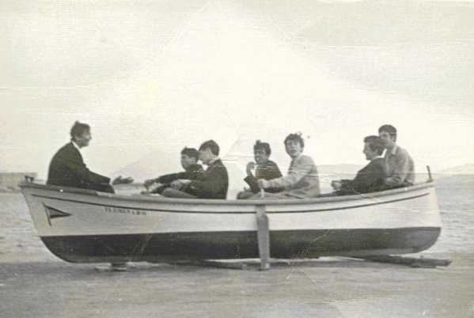

SANTOÑA 5º CURSO. "HACIENDO EL CAPULLO". Sin uniforme del colegio "Collado y Jaso" (alumnos externos). Atrás "Alberto Ruiz de Oña". Dirigiendo la nave "Pedro Galán". Que me perdonen los otros dos, pero no recuerdo sus nombres. Metido en faena el que suscribe.
 |